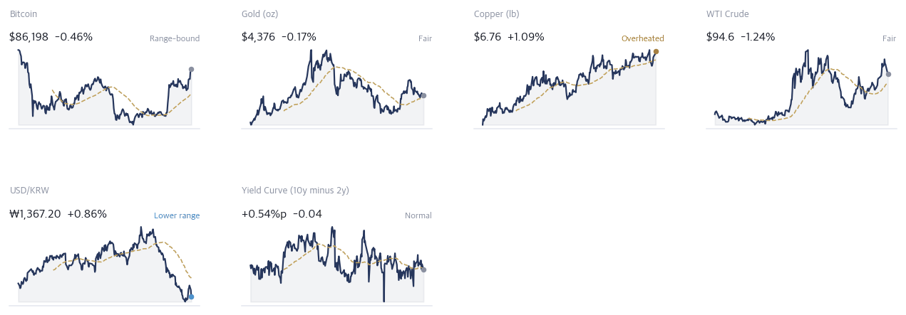
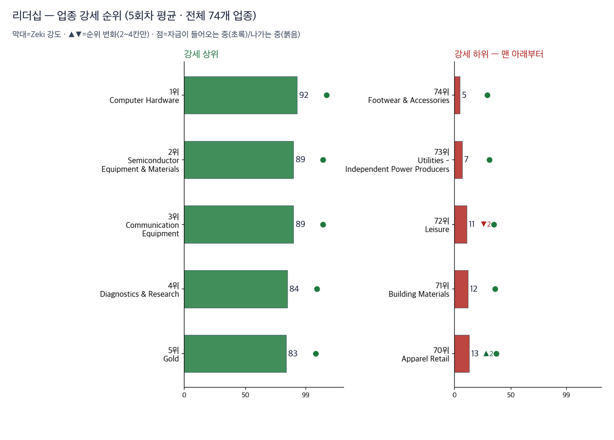
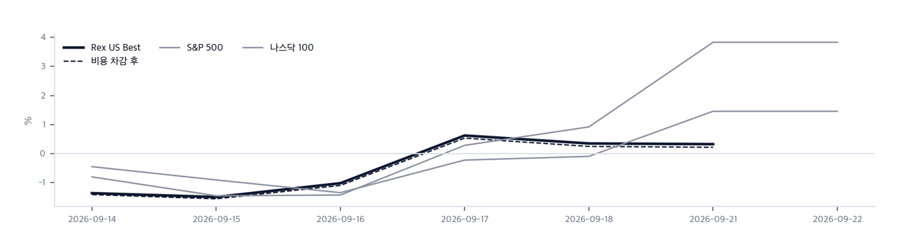

| |||||||||||||||||||||||||||||||||||||||||||||||||||||||||||||||||
나스닥 사상 최고… 금융주는 인공지능 비서 우려에 하락 | |||||||||||||||||||||||||||||||||||||||||||||||||||||||||||||||||
| 저희가 정한 규칙이 고른 종목과 그 성적을 매일 그대로 싣습니다. 맞았든 틀렸든 지우지 않습니다. | |||||||||||||||||||||||||||||||||||||||||||||||||||||||||||||||||
| |||||||||||||||||||||||||||||||||||||||||||||||||||||||||||||||||
| |||||||||||||||||||||||||||||||||||||||||||||||||||||||||||||||||
| 오늘의 조치 | |||||||||||||||||||||||||||||||||||||||||||||||||||||||||||||||||
| |||||||||||||||||||||||||||||||||||||||||||||||||||||||||||||||||
| 오늘 하나만 깊이 보면 | |||||||||||||||||||||||||||||||||||||||||||||||||||||||||||||||||
| |||||||||||||||||||||||||||||||||||||||||||||||||||||||||||||||||
| 그 밖에 알아야 할 것 | |||||||||||||||||||||||||||||||||||||||||||||||||||||||||||||||||
| |||||||||||||||||||||||||||||||||||||||||||||||||||||||||||||||||
한국과 미국을 잇는 것: 서울은 23일 코스피가 0.90% 올라 추석 연휴 전 마지막 거래일을 마쳤고, 24일부터 27일까지 문을 닫습니다. 뉴욕 독자에게 이것이 주는 것은 하나입니다 — 미·중 회담 결과가 나와도 서울은 그것을 값에 반영할 자리가 나흘 동안 없습니다. | |||||||||||||||||||||||||||||||||||||||||||||||||||||||||||||||||
| |||||||||||||||||||||||||||||||||||||||||||||||||||||||||||||||||
| 핵심 지표 | |||||||||||||||||||||||||||||||||||||||||||||||||||||||||||||||||
| |||||||||||||||||||||||||||||||||||||||||||||||||||||||||||||||||
Rex Pulse 거시 지표 16종 1년 추이  Rex Pulse™ — 지수·가상자산 / 통화 / 원자재 / 채권 16종, 1년 흐름과 50일 평균값(점선) · 기준 뉴욕 9/22 종가, 서울 9/23 종가(현지시간) | |||||||||||||||||||||||||||||||||||||||||||||||||||||||||||||||||
정정. 9월 22일 판의 신호등 그림이 틀렸습니다. S&P 500과 나스닥 종합이 「0가지 통과·빨간불」로 그려졌습니다. 맞는 값은 같은 지면의 글에 적힌 6가지와 5가지입니다. 지수값을 읽지 못한 것을 0으로 그렸습니다. 값을 읽지 못하면 그리지 않도록 고쳤습니다. Zeki 신호등은 노란불입니다. 9월 22일 종가 기준이며 나스닥 종합만 초록불이고 S&P 500은 6가지, 러셀 2000은 5가지를 만족합니다. 지수 3개 모두 장기 구조는 온전합니다. 기록을 세운 지수와 뒤처진 지수가 같은 날에 있다는 것이 오늘 지면의 요지입니다. 보실 것은 러셀 2000이 남은 2가지를 채우는지입니다 — 채우면 상승이 넓어진 것이고, 5가지에 머물면 기록은 큰 종목 몇 개가 만든 것입니다. | |||||||||||||||||||||||||||||||||||||||||||||||||||||||||||||||||
업종 히트맵 — 오늘의 상승·하락 지도  색은 당일 등락(짙을수록 큼), 타일은 시가총액입니다. 상단에 당일 상승·하락 1위가 적혀 있고, 큰 칸이 움직인 날이 지수가 움직인 날이라는 뜻입니다 — 아래 리더십 순위(추세의 힘)와 함께 읽으십시오. | |||||||||||||||||||||||||||||||||||||||||||||||||||||||||||||||||
| 리더십 — 업종 강세 순위 | |||||||||||||||||||||||||||||||||||||||||||||||||||||||||||||||||
 이 그림 읽는 법
| |||||||||||||||||||||||||||||||||||||||||||||||||||||||||||||||||
| 수급 — 거래로 되짚은 자금 흐름 | |||||||||||||||||||||||||||||||||||||||||||||||||||||||||||||||||
수급과 거래량을 한 줄로
거래량은 최근 5거래일 평균 ÷ 50일 평균입니다. ✓ 는 저희 진입 규칙(MACD 라인 > 0)도 통과했다는 뜻이고, ✗ 는 수급은 좋지만 규칙 밖이라는 뜻입니다. 이 읽는 법이 맞는지는 지금 세고 있습니다. | |||||||||||||||||||||||||||||||||||||||||||||||||||||||||||||||||
| 업종 | 강세 | 자금 | 20거래일 |
|---|---|---|---|
| Information Technology Services | 69 | 8 | +0.048 |
| Financial Data & Stock Exchanges | 59 | 11 | +0.034 |
| Internet Content & Information | 74 | 28 | +0.002 |
값만 센 곳 — 돈은 빠지는 중
| 업종 | 강세 | 자금 | 20거래일 |
|---|---|---|---|
| Semiconductor Equipment & Materials | 5 | 54 | -0.030 |
| Healthcare Plans | 21 | 70 | -0.051 |
| Metal Fabrication | 44 | 88 | -0.076 |
강세 순위 — Zeki 강도(12개월 가중)로 세운 순위입니다. 최근 5회차를 평균해 하루치 흔들림을 걷어냈습니다.
자금 순위 — 20거래일 순매수로 세운 순위입니다. 값이 아니라 **돈이 들어온 양**을 봅니다.
공동 순위 — 값이 같으면 같은 순위를 줍니다. 억지로 가르지 않습니다.
두 순위가 어긋나면 — 그 자리가 볼 만합니다. 돈이 먼저 오면 값이 아직인 것이고, 값이 먼저 세면 돈이 빠지는 중일 수 있습니다.
| 01 AMD Advanced Micro Devices+9.95% |
| 02 P Everpure+9.14% |
| 03 ALNT Allient+8.82% |
| 04 SNX TD SYNNEX+5.05% |
| 05 OKTA Okta+4.91% |
| 06 WT WisdomTree+2.82% |
| 07 MU Micron Technology+2.77% |
| 08 BJRI BJ's Restaurants+2.64% |
| 09 STX Seagate Technology Hol+2.16% |
| 10 MRX Marex Group+1.77% |
| 11 ● DELL Dell Technologies+1.28% |
| 12 MTRN Materion+1.23% |
| 13 TIGO Millicom International+0.90% |
| 14 MGNI Magnite+0.64% |
| 15 TGTX TG Therapeutics+0.51% |
| 16 MT Arcelor Mittal NY Regi+0.01% |
| 17 PACS PACS Group-0.14% |
| 18 CHEF The Chefs' Warehouse-0.14% |
| 19 CGAU Centerra Gold-0.30% |
| 20 OII Oceaneering Internatio-0.78% |
| 21 CVI CVR Energy-1.01% |
| 22 LPG Dorian LPG-2.60% |
| 23 PSX Phillips 66-4.17% |
| 24 ● MPC Marathon Petroleum-5.30% |
| 25 ● DINO HF Sinclair-5.70% |
8,050종목 가운데 66종목이 저희 기준을 넘었고 그중 위 25종목을 싣습니다. 맨 위는 AMD·마이크론·델로 셋 다 Zeki 강도 98입니다. 반도체와 컴퓨터 하드웨어가 위쪽을 채웠고 정유 2종목(마라톤페트롤리엄·HF싱클레어)도 95로 남아 있습니다. 뜻은 이렇습니다 — 이 명단은 두 이야기로만 이루어져 있습니다. 인공지능 설비에 파는 회사와 기름을 정제해 파는 회사입니다. 둘 다 24일 워싱턴 회담 한 자리에 좌우됩니다. 명단이 좁다는 것은 맞을 때 크게 맞고 틀릴 때 함께 틀린다는 뜻이므로, 이 명단을 그대로 사시면 안 됩니다. 저희도 네 종목만 들고 현금을 71.63% 두고 있습니다.
| 반도체·하드웨어 5 | |||
| AMD Advanced Micro Devic | RS 98 | $623.77 | |
| MU Micron Technology, I | RS 98 | $1,096.16 | |
| STX Seagate Technology H | RS 97 | $919.84 | |
| P Everpure, Inc. | RS 91 | $110.89 | |
| ALNT Allient Inc. | RS 93 | $108.06 | |
| 소재·광물 4 | |||
| CGAU Centerra Gold Inc. | RS 93 | $23.47 | |
| TECK Teck Resources Ltd | RS 85 | $68.88 | |
| WPM Wheaton Precious Met | RS 80 | $153.81 | |
| AU AngloGold Ashanti PL | RS 81 | $104.60 | |
| 에너지·정유 3 | |||
| LPG Dorian LPG Ltd. | RS 94 | $53.54 | |
| PSX Phillips 66 | RS 94 | $256.78 | |
| REPX Riley Exploration Pe | RS 83 | $40.20 | |
| 금융 2 | |||
| MRX Marex Group Limited | RS 94 | $72.65 | |
| SLDE Slide Insurance Hold | RS 88 | $23.87 | |
| 헬스케어 1 | |||
| PACS PACS Group, Inc. | RS 92 | $41.53 | |
통과 목록이 말하는 것. 66개가 37개 업종에 흩어져 있고 상위 3개 업종을 합쳐도 12종목(18%)뿐입니다. 시장의 강세는 넓습니다. 우리 4자리는 에너지·정유 2, 반도체·하드웨어 1로 나뉘어 있고 가장 큰 쪽이 에너지·정유입니다입니다. (업종 미확인 1종목 제외) 아래는 그중 종합점수 상위 15개이며, 매수 추천이 아니라 자리가 열리면 작업을 시작할 순서입니다.
| 한 줄 정리: Zeki 신호등은 노란불입니다. 나스닥 종합만 초록불이고 S&P 500과 러셀 2000은 노란불입니다. 지수 하나가 사상 최고인데 신호등이 노란불인 까닭은 **넓이**입니다. 작은 종목이 큰 종목만큼 오르지 못하면 상승이 넓게 퍼지지 않은 것이고, 저희는 그것을 한 단계 낮춰 읽습니다. |
|
우리가 한 일 · 3/3
데이터 기준 9/22 (ET) 종가 · 밤사이 서울 9/23 종가(현지시간) |
ZekiRex™ |
기준 2026-09-22 15:45 ET
실제 운용 계좌를 그대로 비춥니다
종목·비중·매매·손절가는 모두 실제 계좌의 것입니다. 이 지면에서 고른 것은 하나도 없습니다. 계좌 금액과 주식 수는 싣지 않습니다. 추천이 아닙니다.
| 종목 | 비중 | 손익 | 현재가 | 손절가 | 여유 | 보유 기간 | 다음 이벤트 |
| IRDM | 7.5% | +1.2% | $48.61 | $44.87 | +8.3% | 30일 | — |
| MPC | 8.1% | +9.1% | $392.84 | $331.32 | +18.6% | 30일 | 실적 11-03 |
| DINO | 3.4% | +12.2% | $107.36 | $88.07 | +21.9% | 35일 | 실적 10-29 |
| DELL | 9.3% | +26.1% | $550.11 | $401.41 | +37.0% | 30일 | 실적 11-27 |
| 현금 | 71.6% | 단기 국채 ETF(USFR)에 예치해 둡니다 | |||||
| DELL | 머니투데이는 22일 델 테크놀로지스가 한국벤처투자에 GPU 서버를 공급한다고 전했습니다. — Money Today 2026-09-22 09:09 KST |
포트폴리오 누적 수익률 대 벤치마크
지금 지수와의 차이 — S&P 500 대비 +7.02%p · 나스닥100 대비 +4.34%p
개시 이후 시간가중수익률은 +7.65%입니다(2026년 8월 11일부터 9월 21일까지 28거래일, 계좌 세션 계산). 같은 기간 SPY는 +0.63%, QQQ는 +3.31%였고 최대 낙폭은 -8.67%였습니다. 28거래일은 실력과 운을 가릴 만한 길이가 아닙니다. 이 수치는 저희가 규칙을 지켰는지 보는 기록이지 앞으로를 약속하는 수가 아닙니다. 지금 봐야 할 것은 수익률이 아니라 최대 낙폭입니다 — -8.67%는 같은 규칙으로 언제든 다시 겪을 수 있는 폭이고, 그만큼을 견딜 수 있는지가 이 규칙을 따를지를 정합니다.실제로 사고판 기록
| 09-02 | USFR | 매수 | $50.48 |
| 08-24 | MPC | 매수 | $360.13 |
| 08-24 | IRDM | 매수 | $48.05 |
| 08-24 | DELL | 매수 | $436.32 |
| 08-19 | DINO | 매수 | $95.73 |
값은 실제로 사고판 값 그대로입니다. 주식 수와 금액은 싣지 않습니다.
무엇인가. 이 뉴스레터에 이름이 오른 회사들을 모아 만든 지수입니다. 관문을 통과한 종목과 포트폴리오 보유 종목을 합쳐 최대 스물아홉 곳까지, 모두 같은 비중으로 담습니다. 명단은 판이 나가는 날 그대로 적어 두고 뒤에 고치지 않습니다 — 지나고 나서 좋았던 것만 골라 넣으면 어떤 성적표도 좋아 보이기 때문입니다.
무엇을 위한 것인가. 저희가 지면에 적은 이름이 실제로 값을 하는지 숫자로 남기기 위해서입니다. 그래서 같은 기간 S&P 500 · 나스닥 100과 나란히 놓고, 사고파는 비용을 뺀 뒤의 숫자도 함께 싣습니다.
숫자 읽는 법. Zeki 강도는 같은 기간 다른 주식과 견준 주가의 힘을 100점 만점으로 매긴 것입니다. 100점에 가까울수록 많이 오른 쪽입니다.
아닌 것. 살 수 있는 상품이 아니고, 추천도 아니며, 저희 계좌의 성적도 아닙니다.

이 그림 읽는 법
| 무엇인가 | 그날 편지에 실린 이름 전부(Rex 25 + 보유 종목)를 똑같은 무게로 담았다면 어떻게 됐을지입니다. 살 수 있는 상품이 아니라 저희 명단의 성적표입니다. |
| 두 선 | 실선은 비용 전, 점선은 매매비용을 뺀 뒤입니다. 명단이 바뀌면 갈아타는 비용이 들기 때문에 둘을 함께 싣습니다. |
| Best 의 뜻 | 시장에서 최고라는 뜻이 아니라 저희 기준으로 가장 높은 점수를 받은이라는 뜻입니다. |
| 길이 | 짧은 구간은 운과 실력을 가르지 못합니다. 120거래일이 쌓이기 전까지는 이 숫자로 판단하지 마십시오. |
| Rex US Best | +0.22% | — | |||
| S&P 500 | +1.46% | −1.24%p | |||
| 나스닥 100 | +3.83% | −3.61%p |
6거래일 · 비용을 뺀 값입니다. 비용 전은 +0.33%입니다. 오른쪽은 우리가 앞선 폭입니다.
6거래일치입니다. 짧은 구간은 운과 실력을 가르지 못하므로 120거래일이 쌓이기 전까지는 이 숫자로 판단하지 마십시오.
많이 오른 쪽
| Micron Technology MU | +5.00% |
| Okta OKTA | +2.76% — 값은 지난 1년 중 가장 높습니다. |
| Centerra Gold CGAU | +2.27% |
많이 내린 쪽
| Dorian LPG LPG | −5.47% |
| Dell Technologies DELL | −4.59% |
| Marex Group MRX | −4.04% — 평소보다 훨씬 많이 거래됐습니다. |
새로 들어온 종목
| Seagate Technology Holdings STX, Everpure P, TD SYNNEX SNX, Magnite MGNI, Millicom International TIGO | 저희 조건을 새로 갖춰 명단에 올랐습니다 |
빠진 종목
| Cenovus Energy CVE | 9월 11일부터 7거래일, —. 명단에서 빠졌습니다 (사유를 값으로 설명할 수 없습니다) |
| Slide Insurance Holdings SLDE | 9월 14일부터 6거래일, —. 명단에서 빠졌습니다 (사유를 값으로 설명할 수 없습니다) |
| CoreCivic CXW | 9월 11일부터 7거래일, —. Zeki 강도가 87점으로 내려 56위가 되어 빠졌습니다 |
| APA APA | 9월 15일부터 5거래일, —. Zeki 강도가 89점으로 내려 52위가 되어 빠졌습니다 |
| Geo Group Inc (The) REIT GEO | 9월 11일부터 7거래일, —. Zeki 강도가 87점으로 내려 35위가 되어 빠졌습니다 |
|